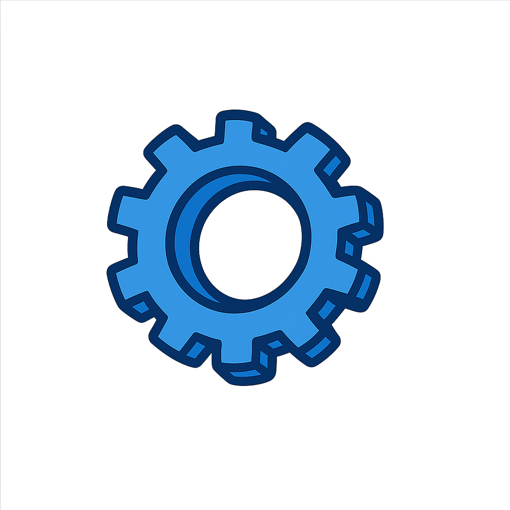

I see every new challenge as an opportunity for further development. With mindfulness, creativity, and quick action, I find ways to master them. Challenges are not obstacles for me, but stepping stones to grow and unleash my potential.
About Me
Engineer Mauricio Mora, MSc., with extensive experience in automation project management, software development, and I&C techniques. My approach focuses on applying creativity, quick action, and meticulous attention to overcome challenges, foster growth, and unleash my full potential.
I am actively seeking new opportunities to develop professionally and create value for companies.
Skills
Software and Technologies
MS Office, Access and Project(Level: 5/5)
PLC - TIA Portal(Level: 5/5)
MS Visual Basic(Level: 5/5)
C, C++(Level: 4/5)
HTML, Java, PHP(Level: 4/5)
Oracle - MySQL(Level: 3/5)
SAP(Level: 3/5)
Solid Edge(Level: 3/5)
Languages
Spanish(Native Language - C2)
German(C1)
English(B2)
French(A1)
Certificates and Others
Driving Licenses: A and B
Work Experience

I&C Technician
05.2024 - 11.2024
VOGELBUSCH Biocommodities GmbH, (Full-time), Vienna, Austria
Creation of standard documentation for electrical and instrumental systems (measurement, I/O, motor, consumer lists) and review of P&I diagrams to ensure conformity with automation requirements.
Showed high proactivity and completed tasks to full satisfaction.
Project Management in Automation and Software Development
08.2021 - 03.2024
PRIMETALS TECHNOLOGIES AUSTRIA GmbH, (Full-time), Linz, Austria
Key role in the architecture and software development for automation and electrical engineering projects. Managed international technical projects, including customer communication, supplier negotiations, planning of electrical installations (MCC, PLCs, transformers, motors, sensors, converters), and creation of detailed technical documentation (specifications, standards, layouts, equipment lists, and functional descriptions).
Performed inspections and acceptances in factories. Distinguished by precision, reliability, commitment, and deep technical knowledge, always finding optimal solutions and contributing significantly to project success.
Automation Techniques and Project Manager
06.2019 - 07.2021
SPRINGER MASCHINENFABRIK GmbH, (Full-time), Linz, Austria
PLC software developer in sawmill automation. Responsible for team program creation, commissioning at the end customer's site, and proper project completion.
Proved to be a conscientious, loyal, and versatile person in his functions.
Promotional Activities
01.2015 - 05.2019
PLASMAPUNKT DONAUZENTRUM, (Freelance contract), Vienna, Austria
Refrigeration Plant Technician (Internship)
02.2019 - 02.2019
Johnson Controls, (Internship), Vienna, Austria
Assistant with Logistics Activities
04.2016 - 01.2017
WIENER GEWÄSSER (MA 45), (Full-time), Vienna, Austria
Sales Assistant-Manager
04.2015 - 11.2015
SUBWAY (DON sub GmbH), (Seasonal work), Vienna, Austria
Responsible for warehouse, sales, and cash register (lots of customer contact).
My main task was to ensure the proper functioning of the entire vehicle fleet, which provided transportation between the different facilities of the company.
This included activities within the city as well as for investigations or emergencies at the national level. During this time, I managed to develop programs in Visual Basic to control vehicle expenses, both for mechanics and fuel, leading to a 20% saving.
Furthermore, I was responsible for the development and supervision of the vehicle purchasing process. I successfully acquired four trucks that met the requirements for our services and established the contract models for future acquisitions of vehicles suitable for the company.
Project Manager
03.2011 - 12.2011
FACTS S.A.S, Colombia
My main task was to develop dashboards with Xcelsius. During this time, I managed to develop a new multi-layer dashboard system that optimized data visualization.
I was also a pioneer in creating dashboards that could load information directly from text files (.txt), giving them the flexibility to work with any database. To complement this, I also created reports in Oracle databases and extracted the information in .txt format for later linking to the dashboards.
Project Manager
05.2010 - 05.2011
QP Consultores, Colombia
My responsibility was the development of dashboards and reports for the Business Intelligence infrastructure, which showed financial, logistics, and inventory reports, among others.
During my time there, I managed to significantly improve delivery times, meet agreed deadlines, and thus increase the company's fulfillment rate. In addition, I developed new dashboard and reporting systems that made information retrieval much more dynamic.
A key success was that by chaining information within the Oracle databases, I was able to significantly reduce the processing times of the dashboards.
IT & Logistics Manager
2008 - 2010
BRITISH AMERICAN TOBACCO (BAT), Bogotá, Colombia
Manager of the reporting platform with SAP Business Intelligence and Xcelsius applications.
Academic Education
Production and Technology Management MSc
09.2020 - 11.2023
Zukunftsakademie Mostviertel and FH St. Pölten, Austria
The "Production and Technology Management (MSc)" master's program empowers graduates to efficiently design production processes and implement technological innovations in industry. A central topic of the study is project management, which enables students to effectively plan and control complex projects in the production and technology sector.
Students learn techniques for project structuring, resource and time planning, and risk management to successfully implement dynamic and technically demanding projects.
Furthermore, the program places a strong focus on Lean Manufacturing methods, which aim to maximize efficiency and quality in production. Concepts such as the Toyota Production System, Kaizen, and Six Sigma are important components of the curriculum. These methods serve to minimize waste and increase productivity by promoting continuous improvements in production processes. Students learn to systematically analyze value chains and develop sustainable improvement strategies that ensure high quality and low costs.
The program prepares graduates for leadership positions in production and technology companies. Through the interplay of project management and Lean Manufacturing, they develop a deep understanding of modern management approaches that are in demand in a digitized and globalized industry. Graduates are highly qualified to integrate technological advancements purposefully into production processes and create competitive advantages.
The "Production and Technology Management" master's thus offers a practice-oriented and forward-looking education that is oriented towards the requirements of a constantly evolving industry and aims to meet the challenges of modern production with innovative and sustainable solutions.
Master's Thesis:
My master's thesis, "Empirical Evaluation of the Benefits of MUL (Units of Measure Conversion and Ruler) in Units of Measure Conversion: A Comparison with the Traditional Method," empirically evaluated the benefits of an alternative method (MUL) developed by me for converting units of measurement compared to the traditional approach.
Through a detailed analysis, the research highlighted the effectiveness of this new method in learning and practical application, offering a valuable perspective for the didactics of natural sciences and engineering.
Refrigeration Plant Technician - Vocational Training
11.2017 - 04.2019
Berufsförderungsinstitut (BFI), Vienna, Austria
During this intensive training, I acquired a solid foundation in the assembly, commissioning, and maintenance of refrigeration and air conditioning systems, integrating fundamental knowledge of industrial electrical engineering.
I was trained in the electrical installation of refrigeration equipment and heat pumps, including pipe routing, connections, leak testing, and leak control, always adhering to safety and environmental protection regulations. In addition, I developed competencies in the design and diagnosis of circuits and control systems (PLC), including specific measurement and regulation techniques for the refrigeration cycle.
I complemented my profile with practical skills in metalworking – such as turning, milling, welding, and assembling electrical cabinets – and the application of pneumatic or electro-pneumatic systems. The training successfully prepared me to pass the final examination ("Lehrabschlussprüfung") in the electrical engineering module and in the field of refrigeration technology, positioning me as a qualified technician for the operation, maintenance, and optimization of refrigeration and air conditioning systems in industrial and commercial environments.
Electrical Engineer Vocational Training (Plant and Operations Technology)
11.2017 - 04.2019
Berufsförderungsinstitut (BFI), Vienna, Austria
During this intensive training, I acquired a solid foundation in electrical engineering applied to industrial environments, with a focus on the installation, maintenance, and repair of electrical and electromechanical systems. I learned to work with complex installations that integrate electrical, pneumatic, and hydraulic components, applying technical criteria and current safety regulations. I was trained in the interpretation of electrical diagrams and technical schematics, as well as in the measurement, analysis, and diagnosis of DC, AC, and three-phase circuits, using professional instruments and complying with VDE standards.
In parallel, I developed skills in industrial automation through the handling of control systems and basic PLC programming, applying knowledge of measurement, regulation, and fault detection. The training also covered fundamentals of mechanical manufacturing (lathe, milling, CNC) and basic welding techniques (electrode, autogenous, and MIG/MAG), which allowed me to complement my technical profile with practical workshop skills.
I also dealt with topics of sustainability and renewable energies in electrical engineering and integrated efficient and environmentally friendly solutions. This course prepared me to work professionally as an electrical engineer in industrial plants, with a comprehensive vision of the function of plants and operating systems and with competencies to undertake both technical and operational tasks within the maintenance and optimization of industrial processes.
Master's Degree in Mechanical Engineering
2003 - 2012
Universidad de los Andes, Bogotá, Colombia
Specialization: Logistics and Production Control.
During my studies in Industrial Engineering, I acquired comprehensive training in process optimization across various industrial and economic sectors.
I developed competencies in key areas such as production, logistics, quality management, and supply chain management, focusing on improving operational efficiency and cost reduction.
Furthermore, I gained applicable knowledge in research and development of innovative technologies, particularly in automation, robotics, and artificial intelligence. I also continued my education in business consulting, supporting organizations in process improvement, strategic planning, and project management. My training included leading teams, planning production processes, implementing ERP systems, and developing sustainable solutions for industry. This degree program prepared me for responsible and leading roles in a globalized economic environment.
Matura (High School Diploma)
2003
Liceo Los Alpes, Cali, Colombia
Complementary Education
Introduction to AI Course
2025
BIG school
I completed the online Introduction to Artificial Intelligence course, focusing on ChatGPT, personalized GPTs, and Make.
During the course, I gained fundamental knowledge of AI, effective prompt design, creating personalized assistants with GPTs, and automating workflows with Make.
SCC Training (Safety Certificate for Contractors)
2021
TU Wien Austria
Duration: 16 hours.
University Course Modern Management - Project Management
2016
University of Graz, Austria
I completed a training program that provided me with fundamental knowledge in project and process management to expand my skills in the implementation, execution, and control of projects. During this program, I furthered my education in various key areas of project management.
I acquired a solid foundation in the essential principles of project management and learned to understand and optimize workflows within projects through process management. I developed skills to effectively plan time and identify, assess, and mitigate potential risks.
I was also trained in the necessary techniques for monitoring and controlling project progress to ensure that projects stay within budget and deadlines. Furthermore, I delved into concepts of business planning and investment evaluation, which are crucial for project feasibility.
The program also included understanding different team roles and models, as well as leadership techniques for effectively leading project teams. I was introduced to agile methodologies such as Kanban and Scrum and learned to apply them in collaboration and project management.
In addition to technical knowledge, my soft skills were also strengthened, including effective communication, teamwork, and the ability to deliver convincing presentations. This program, offered in a flexible format, allowed for self-directed study and facilitated the integration of acquired knowledge into my professional responsibilities.
Lean Manufacturing Course
2013
Brinks de Colombia, Bogotá, Colombia
Duration: 50 hours.
Oracle Data Base Administrator Diploma
2010
Bogotá, Colombia
Duration: 152 hours.
Featured Projects
Committed Volunteer Work
Organization: Schönbrunn Zoo, Vienna, Austria
Period: Since 2016
Continuous volunteer collaboration at Schönbrunn Zoo, demonstrating a strong commitment to animal welfare and conservation. This activity reflects dedication, responsibility, and passion for nature.
Continuous Casting: Process Optimization and Control
Company: PRIMETALS TECHNOLOGIES AUSTRIA GmbH
Description: I focused on the improvement and optimization of metal continuous casting processes, a critical component in industrial production, with the aim of ensuring higher quality and efficiency in steel manufacturing.
Technologies Used: This project involved the manipulation and improvement of existing control systems, primarily based on Siemens systems and their TIA Portal programming environment. Advanced algorithms for managing the key variables of the process were implemented.
Contributions and Achievements: My work focused on the development of specific programming blocks for continuous casting. These blocks were designed to improve the overall efficiency and precise control of the processes, leading to benefits such as reduced cycle times, optimized energy consumption, and significant improvement in the quality of the final product through finer control. Specifically, control systems for withdrawal speed, mold level, and secondary cooling distribution were enhanced to minimize defects and maximize productivity.
Automation of EPLAN Variables Migration to TIA Portal
Company: Springer Maschinenfabrik GmbH
Description: I led the development and implementation of a tool to automate and standardize the migration of variables from EPLAN Electric P8 to TIA Portal, significantly optimizing the configuration process of automation projects.
Technologies Used: The solution was developed in Visual Basic for Applications (VBA) within Microsoft Excel, leveraging Excel's capability for data management and manipulation.
Implemented Functionalities:
Automatic extraction and processing of variables from EPLAN.
Standardized generation of the folder and variable structure in TIA Portal.
Creation of an Excel file ready for direct import of all variables into TIA Portal.
Compliance with TIA Portal-specific naming and organization standards.
Challenge and Key Solution: The main challenge lay in the tedious and error-prone manual migration of a large volume of EPLAN variables to TIA Portal, resulting in inconsistencies and delays. The solution was to create a VBA program that automated the reading of the EPLAN export, processed the data, and generated a structured and standardized Excel file that could be directly imported into TIA Portal. This eliminated the need for manual creation, ensuring consistency and drastically accelerating project initiation.
Automated Irrigation System
Company: Springer Maschinenfabrik GmbH
Description: I led the design and implementation of an innovative irrigation system to maintain optimal humidity levels for large volumes of wooden logs.
Technologies Used: Automation was achieved using Siemens PLCs, programmed in TIA Portal. I developed an advanced user interface with Siemens SCADA platforms, accessible via touchscreens and external computers.
Implemented Functionalities:
Custom selection and grouping of sprinklers.
Precise adjustment of irrigation runtimes.
Real-time monitoring of pump status and capacity.
Integration of environmental data (wind direction) to optimize irrigation.
Logging of operating hours for preventive maintenance.
Challenge and Key Solution: The primary challenge was the limited pump capacity, which prevented activating all sprinklers simultaneously. I designed and programmed a flexible system that allowed the client to select groups of sprinklers and create customized irrigation programs with different outputs and execution times, optimizing resource utilization.
Development and implementation of route control systems to optimize driver efficiency.
Management of preventive and corrective maintenance for a fleet of 45 vehicles (cars and pickups).
Creation and control of budgets for the logistics and transportation department.
IT and Sales Project Leader
Company: QP Consultores, Bogotá, Colombia
Period: 2010 - 2012
Responsible for the management of IT system projects.
Database administration for clients.
Active participation in the sale of IT systems and services, identifying client needs and proposing solutions.
Development of BI Platforms
Company: QP Consultores
Description: As a project leader, I directed and managed the development and implementation of various Business Intelligence (BI) platforms for a variety of clients.
Scope and Collaboration: This project involved close coordination and collaboration with development teams to ensure that the designed BI solutions not only met technical requirements but also provided valuable and actionable information for clients' strategic decision-making.
Project Lifecycle Management: I was responsible for the integral management of these projects, encompassing all phases of the lifecycle:
Initial Planning: Definition of objectives, scope, and resources.
Communication: Maintaining fluid and effective communication with all stakeholders (clients, development teams).
Commissioning and Operation: Supervision of implementation and assurance of platform operability.